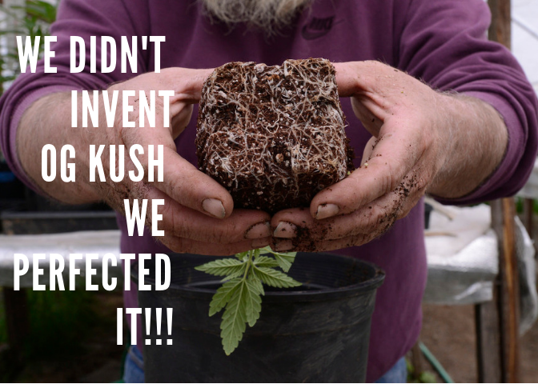

The first alleged recorded use of Cannabis as a medicine was way, way back, between 2696 – 2737 BC in China by legendary Emperor Shen Nung (the same guy who is said to have invented tea). Nung was fabled as a philosopher, farmer and hemp enthusiast, whose documentation of the plant’s ‘yin energy’ for malaria, dysentery, constipation and rheumatic pains is considered the first pharmacopoeia entry (an encyclopaedia of medicines detailing their effects and uses). Over in Africa, there are records of medicinal use of cannabis in The Egyptian Ebers Papyrus – a preserved medical document that dates to about 1550BC – for treatment in fever, pain and uterine contraction. Across the Mediterranean, Dioscorides – private physician to the Roman Emperor Nero – documented it as a treatment “for pains of the ears”. Meanwhile, from the 8th to the 18th century, evidence shows that the Arab world used it as a painkiller, anti-inflammatory and anti-epileptic.
OUR LOCATION
GALLERY



PRODUCTS